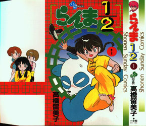
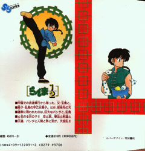

Il Manga
|
Il Manga |
Il manga è iniziato nel 1987 sulle pagine della rivista Giapponese di fumetti "Shuukan Shonen Sunday", pubblicata dalla "Shogakukan" ed è continuato praticamente per dieci anni con una frequenza media di sedici pagine a settimana. Tutto quello che esce sul settimanale è stato poi raccolto in volumi chiamati "tankobon", solitamente due mesi dopo l'uscita sul settimanale.
La pubblicazione si è conclusa con il volume numero 38 uscito nel 1997. È stato un successo su tutta la linea, dal momento che è tra i manga più seguiti in assoluto, sia in Oriente che in Occidente, seguito da circa dodici milioni di lettori (non è un dato ufficiale, comunque soltanto Shonen Sunday vende più di due milioni di copie!) e che per ben due anni di seguito, nel 1988 e nel 1989 (quindi dopo solo un anno dalla sua uscita), si è aggiudicato il titolo di "Migliore Manga Umoristico dell'Anno".
In Italia, ha avuto invece delle uscite abbastanza travagliate. è iniziato dapprima su "Mangazine" della "Granata Press" nel 1992, per passare poi, nel 1995, sulle pagine della testata "Manga Hero" sempre della stessa casa editrice. Per ultimo, è uscito come quindicinale sulla testata "Neverland" della "Star Comics", composto di 53 volumetti con lettura alla occidentale, curato sempre dai Kappa, con una qualità (opinione personale) comunque, e aggiungo purtroppo, alterna e tendente al basso!
Un paio di cose riguardo questo elenco: innanzitutto, noterete che alcuni titoli potrebbero essere differenti dalla versione italiana. Questo perché le traduzioni sono state fatte da diverse fonti. Secondo poi, la suddivisione degli episodi, è differente rispetto alla versione italiana, poiché bisogna considerare che, più o meno, con un volume giapponese, se ne fanno un paio italiani (per esempio, il primo volumetto della Star, termina con l'episodio 5). Per ultimo, selezionando il link associato ad ogni numero di volume, entrerete nelle sinossi relative ad ogni volume.
Come vedete, questa sezione è ancora incompleta, mancano le descrizioni degli ultimi quattro volumi e di alcune storie; porrò rimedio a questo come posso. Infatti queste sinossi le controllo sui volumetti originali e, quindi, mi ci vuole un po' di tempo.
Elenco dei Volumi (tankobon)
Dato che il Primo Volumetto di Ranma è stato mitico (almeno per me), ecco qua la riproduzione della copertina, fronte e retro.
|  |  |
Parte Anno/Settimana Breve Descrizione 1 1987/36 L'arrivo di Ranma e Genma al dojo Tendo 2 1987/37 Genma dà spiegazioni sulla maledizione 3 1987/38 Akane deve combattere contro gli studenti 4 1987/39 Ranma-kun combatte contro Kuno 5 1987/40 Kuno si innamora di Ranma-chan 6 1987/41 Nabiki vende delle fotografie a Kuno 7 1987/42 Akane e Ranma vanno da Tofu-sensei 8 1987/43 Kasumi e Tofu
Parte Anno/Settimana Breve Descrizione 1 1987/44 Il collo di Ranma viene piegato 2 1987/45 Apparizione di Ryoga 3 1987/46 Ranma contro Ryoga 4 1987/47 Ranma contro Ryoga 5 1987/48 I capelli di Akane vengono tagliati 6 1987/49 Akane con i capelli corti 7 1987/50 Ryoga e P-chan 8 1987/51 La storia di P-chan 9 1987/52 Apparizione di Kodachi
Parte Anno/Settimana Breve Descrizione 1 1988/1 Kodachi si innamora di Ranma 2 1988/2-3 Kodachi è la sorella di Kuno 3 1988/4-5 Ranma-chan deve combattere al posto di Akane 4 1988/6 Ranma-chan contro Kodachi 5 1988/7 Ranma-chan sconfigge Kodachi 6 1988/8 Azusa rapisce P-Chan e sfida Akane 7 1988/9 Mikado bacia Ranma-chan e i due si sfidano 8 1988/10 Ranma batte Mikado 9 1988/11 Akane e Ranma contro Azusa e Mikado
Parte Anno/Settimana Descrizione in Breve 1 1988/12 Akane e Ranma, resistono agli "spaccacoppie" 2 1988/13 Ryoga prende il posto di Akane e combatte con Ranma-chan 3 1988/14 Ryoga e Ranma-chan combattono tra di loro per Akane 4 1988/15 Akane rischia di affogare e viene salvata da Ranma e P-Chan 5 1988/16 Shampoo e il bacio della morte 6 1988/17 Shampoo ama Ranma-kun. Akane rompe il fidanzamento con Ranma 7 1988/18 Akane e Shampoo si sfidano 8 1988/19 Akane perde la memoria su Ranma 9 1988/20 Lo shampoo numero 119 può guarire Akane 10 1988/21 Akane ritrova la memoria e Shampoo da l'addio a Ranma
Parte Anno/Settimana Breve Descrizione 1 1988/22 Il punto debole di Ranma 2 1988/23 Il punto debole di Ranma 3 1988/24 Ranma diventa un "gatto" 4 1988/25 Ranma diventa un "gatto" 5 1988/26 Shampoo è una gatta 6 1988/27 Shampoo è una gatta 7 1988/28 Shampoo è una gatta 8 1988/29 L'apparizione di Mousse 9 1988/30 Ranma-chan contro Mousse 10 1988/31 Ranma-chan contro Mousse 11 1988/32 Fushichougan
Parte Anno/Settimana Breve Descrizione 1 1988/33 La battaglia del cocomero 2 1988/34 La battaglia del cocomero 3 1988/35 Ranma diventa "gatto" 4 1988/36 Ryoga alleato con Obaba 5 1988/37 Ryoga alleato con Obaba 6 1988/35 Bakusaitenketsu 7 1988/37 Ryoga contro Ranma 8 1988/37 Ryoga contro Ranma 9 1988/35 Kakutou sadou 10 1988/35 Kakutou sadou 11 1988/35 Kakutou sadou
Parte Anno/Settimana Breve Descrizione 1 1988/44 Kakutou damae 2 1988/45 Kakutou damae 3 1988/46 Kakutou damae 4 1988/47 Kakutou damae 5 1988/48 Happosai "rinasce" 6 1988/49 Happosai il pervertito 7 1989/08 Battaglia nel Bagno 8 1989/09 Happosai dorme con Akane 9 1989/10 Happosai impazzisce 10 1989/11 L'incenso anti-donna 11 1989/12 Happosai contro Genma
Parte Anno/Settimana Breve Descrizione 1 1989/13 La falsa Nannichuan 2 1989/14 L'appuntamento tra Ranma e Shampoo 3 1989/15 L'arrivo del Dojo Yaburi 4 1989/16 Il Dojo Yaburi 5 1989/17 Romeo e Giulietta 6 1989/18 Romeo e Giulietta 7 1989/19 Romeo e Giulietta 8 1989/20 Romeo e Giulietta 9 1989/21 La Nannichuan Giapponese 10 1989/22 La Nannichuan Giapponese 11 1989/23 La Nannichuan Giapponese
Parte Anno/Settimana Breve Descrizione 1 1989/24 I biscotti di Akane 2 1989/25 La foto di Ranma e Kodachi 3 1989/26 Kuno fa il bagno con Ranma-chan 4 1989/27 Ranma mangia i biscotti di Akane 5 1989/28 Arrivo di Ukyo 6 1989/29 Uyko 7 1989/30 Ukyo 8 1989/31 Ukyo contro Ryoga 9 1989/32 L'appuntamento tra Akane e Ryoga 10 1989/33 La fidanzata di Ryoga 11 1989/34 L'appuntamento tra Akane e Ryoga
Parte Anno/Settimana Breve Descrizione 1 1989/35 Happy e Cologne 2 1989/36 La medicina dell'amore 3 1989/37 La medicina dell'amore 4 1989/38 Mousse rapisce Akane 5 1989/39 Mousse rapisce Akane 6 1989/40 Akane diventa una papera 7 1989/41 Akane diventa una papera 8 1989/42 Mousse contro Ranma 9 1989/43 L'arrivo di Kurenai Tsubasa 10 1989/44 Kurenai Tsubasa 11 1989/45 Kurenai Tsubasa
Parte Anno/Settimana Breve Descrizione 1 1989/46 Ryoga e Yoiko 2 1989/47 Ryoga e Yoiko 3 1989/48 Ryoga e Yoiko 4 1989/49 La tecnica Happodaikarin 5 1989/50 La tecnica Happodaikarin 6 1989/51 La tecnica Happodaikarin 7 1989/52 L'incantesimo di Shampoo per farsi abbracciare 8 1990/1 L'incantesimo di Shampoo per farsi abbracciare 9 1990/2-3 Akane diventa forte 10 1990/4-5 Akane diventa forte 11 1990/6 Akane diventa forte
Parte Anno/Settimana Breve Descrizione 1 1990/7 Il Preside ritorna 2 1990/8 Il Preside 3 1990/9 Il figlio del Preside 4 1990/10 Il Preside 5 1990/11 Il Preside 6 1990/12 Tardi per la scuola 7 1990/13 Il sapone di Shampoo 8 1990/14 Il sapone di Shampoo 9 1990/15 Il sapone di Shampoo 10 1990/16 Il sapone di Shampoo 11 1990/17 Il sapone di Shampoo
Parte Anno/Settimana Breve Descrizione 1 1990/18 Ranma diventa debole 2 1990/19 Ranma diventa debole 3 1990/20 Ranma diventa debole 4 1990/21-22 Ranma diventa debole/Hiryu Shoten-ha 5 1990/23 Ranma diventa debole 6 1990/24 Ranma diventa debole 7 1990/25 Ranma diventa debole 8 1990/26 Ranma diventa debole 9 1990/27 Ranma diventa debole 10 1990/28 Ranma diventa debole 11 1990/29 Ranma diventa debole
Parte Anno/Settimana Breve Descrizione 1 1990/30 Ranma diventa debole 2 1990/31 Bakeneko (Gatto Fantasma) 3 1990/32 Bakeneko (Gatto Fantasma) 4 1990/33 Akane nuota 5 1990/34 Akane nuota 6 1990/35 Yotaru, va fuori! 7 1990/36 Il segno di Ryoga 8 1990/37 Il segno di Ryoga 9 1990/38 Il segno di Ryoga 10 1990/39 Il segno di Ryoga 11 1990/40 L'apprendista di Babbo Natale
Parte Anno/Settimana Breve Descrizione 1 1990/41 La spada Manganmaru 2 1990/42 La spada Manganmaru 3 1990/43 La spada Manganmaru 4 1990/44 Re Bakuchio 5 1990/45 Re Bakuchio 6 1990/46 Re Bakuchio 7 1990/47 Re Bakuchio 8 1990/48 I capelli del drago 9 1990/49 I capelli del drago 10 1990/50 I capelli del drago 11 1990/51 I capelli del drago
Parte Anno/Settimana Breve Descrizione 1 1990/52 La corsa di Onsen 2 1990/53 La corsa di Onsen 3 1991/1 La corsa di Onsen 4 1991/2-3 La corsa di Onsen 5 1991/4-5 La corsa di Onsen 6 1991/6 La corsa di Onsen 7 1991/7 La corsa di Onsen 8 1991/8 Picolet 9 1991/10 Picolet 10 1991/11 Picolet 11 1991/12 Picolet
Parte Anno/Settimana Descrizione in Breve/Titolo 1 1991/13 Picolet 2 1991/14 Picolet 3 1991/15 Picolet 4 1991/16 Picolet 5 1991/17 Nabiki è la fidanzata di Ranma 6 1991/18 Nabiki è la fidanzata di Ranma 7 1991/19 Nabiki è la fidanzata di Ranma 8 1991/20-21 Nabiki è la fidanzata di Ranma 9 1991/22 Nabiki è la fidanzata di Ranma 10 1991/23 Nabiki è la fidanzata di Ranma 11 1991/35-36 Noroiteki Kaiga
Parte Anno/Settimana Breve Descrizione 1 1991/24 Taro 2 1991/25 Taro 3 1991/26 Taro 4 1991/27 Taro 5 1991/28 Taro 6 1991/29 Taro 7 1991/30 Taro 8 1991/31 Taro 9 1991/32 Taro 10 1991/33 Taro 11 1991/34 Taro
Parte Anno/Settimana Breve Descrizione 1 1991/37 L'isola del cocomero 2 1991/38 L'isola del cocomero 3 1991/39 L'isola del cocomero 4 1991/40 La salsa di Ukyo 5 1991/41 La salsa di Ukyo 6 1991/42 La salsa di Ukyo 7 1991/43 La salsa di Ukyo 8 1991/44 La salsa di Ukyo 9 1991/45 Abare Takotsubo 10 1991/46 Le bambole di carta di Gosunkuji 11 1991/47 La medicina segreta Shujuugan
Parte Anno/Settimana Breve Descrizione 1 1991/48 Shishi hoko-dan 2 1991/49 Shishi hoko-dan 3 1991/50 Shishi hoko-dan 4 1991/51 Shishi hoko-dan 5 1991/52 Shishi hoko-dan 6 1992/1-2 Shishi hoko-dan 7 1992/3 La maledizione della vigilia del nuovo anno 8 1992/4 La maledizione della vigilia del nuovo anno 9 1992/5 Ranma come Gyouko 10 1992/6 L'album di Kodachi 11 1992/7 L'album di Kodachi
Parte Anno/Settimana Breve Descrizione 1 1992/9 Ranma contro Genma 2 1992/10 Ranma contro Genma 3 1992/11 Ranma contro Genma 4 1992/12 Sakura-mochi no koi 5 1992/13 Sakura-mochi no koi 6 1992/14 Sakura-mochi no koi 7 1992/15 Primo amore 8 1992/16 Mariko 9 1992/17 Mariko 10 1992/18 Mariko 11 1992/19 Mariko
Parte Anno/Settimana Breve Descrizione 1 1992/20 Mariko 2 1992/21-22 La madre di Ranma 3 1992/23 La madre di Ranma 4 1992/24 La madre di Ranma 5 1992/25 La madre di Ranma 6 1992/26 La madre di Ranma 7 1992/27 La spilla della felicità e della tristezza 8 1992/28 La spilla della felicità e della tristezza 9 1992/29 La spilla della felicità e della tristezza 10 1992/30 Il fantasma dei bloomer 11 1992/31 Il fantasma dei bloomer
Parte Anno/Settimana Breve Descrizione 1 1992/32 Taro contro Happosai 2 1992/33 Taro contro Happosai 3 1992/34-35 Taro contro Happosai 4 1992/36 Taro contro Happosai 5 1992/37 L'isola di Yohyo 6 1992/38 L'isola di Yohyo 7 1992/39 La cucina di Ranma e Akane 8 1992/40 La canna da pesca Koi 9 1992/41 La canna da pesca Koi 10 1992/42 La canna da pesca Koi 11 1992/43 La battaglia di Gosunkuji
Parte Anno/Settimana Breve Descrizione 1 1992/44 Herb, Lime e Mint 2 1992/45 Herb, Lime e Mint 3 1992/46 Herb, Lime e Mint 4 1992/47 Herb, Lime e Mint 5 1992/48 Herb, Lime e Mint 6 1992/49 Herb, Lime e Mint 7 1992/50 Herb, Lime e Mint 8 1992/51 Herb, Lime e Mint 9 1992/52 Herb, Lime e Mint 10 1993/1-2 Herb, Lime e Mint 11 1993/3-4 Herb, Lime e Mint
Parte Anno/Settimana Breve Descrizione 1 1993/5 Herb, Lime e Mint 2 1993/6 Herb, Lime e Mint 3 1993/7 Hinako-sensei 4 1993/8 Hinako-sensei 5 1993/9 Hinako-sensei 6 1993/10 Hinako-sensei 7 1993/11 Hinako-sensei 8 1993/12 Hinako-sensei 9 1993/13 Hinako-sensei 10 1993/14 Shinnosuke 11 1993/15 Shinnosuke
Parte Anno/Settimana Breve Descrizione 1 1993/16 Shinnosuke 2 1993/17 Shinnosuke 3 1993/18 Shinnosuke 4 1993/19 Shinnosuke 5 1993/20 Shinnosuke 6 1993/21-22 Shinnosuke 7 1993/23 Shinnosuke 8 1993/24 Shinnosuke 9 1993/25 Shinnosuke 10 1993/26 Shinnosuke 11 1993/27 Shinnosuke
Parte Anno/Settimana Breve Descrizione 1 1993/28 Hinako e Soun 2 1993/29 Hinako e Soun 3 1993/30 Hinako e Soun 4 1993/31 Gli occhiali di Joketsuzoku 5 1993/32 Gli occhiali di Joketsuzoku 6 1993/33 Gli occhiali di Joketsuzoku 7 1993/34 Inseguimento nell'oceano 8 1993/35-36 Inseguimento nell'oceano 9 1993/37 La caverna maledetta distruggi-amore 10 1993/38 La caverna maledetta distruggi-amore 11 1993/39 I risultati del test
Parte Anno/Settimana Breve Descrizione 1 1993/40 Kumon Ryu 2 1993/41 Umisen-ken e Yamasen-ken 3 1993/42 Ranma contro Ranma 4 1993/43 Kumon Ryu 5 1993/44 Kumon Ryu 6 1993/45 Kumon Ryu 7 1993/46 Kumon Ryu 8 1993/47 Kumon Ryu 9 1993/48 Kumon Ryu 10 1993/49 Kumon Ryu 11 1993/50 Le lacrime di Ranma
Parte Anno/Settimana Breve Descrizione 1 1993/51 La fenice di Kuno 2 1993/52 La fenice di Kuno 3 1994/1-2 Pink e Link 4 1994/3-4 Pink e Link 5 1994/5 Pink e Link 6 1994/6 Pink e Link 7 1994/7 Pink e Link 8 1994/8 Oni cattivi 9 1994/9 Nabiki contro Kinnosuke 10 1994/10 Nabiki contro Kinnosuke 11 1994/11 Nabiki contro Kinnosuke
Parte Anno/Settimana Breve Descrizione 1 1994/12 Akari, la ragazza che ama i maiali 2 1994/13 Akari e Ryoga 3 1994/14 Akari e Ryoga 4 1994/15 Il rimedio 5 1994/16 Il pesce da combattimento di Hinako 6 1994/17 Il pesce da combattimento di Hinako 7 1994/18 Il ciliegio mascolino 8 1994/19 Ranma si prende il raffreddore 9 1994/20 Ranma si prende il raffreddore 10 1994/21-22 Ranma si prende il raffreddore 11 1994/23 La spatola maledetta
Parte Anno/Settimana Breve Descrizione 1 1994/24 Happy e Rakkyosai 2 1994/25 Happy e Rakkyosai 3 1994/26 Happy e Rakkyosai 4 1994/27 Akane e Akari 5 1994/28 Akane e Akari 6 1994/XX L'ombrello leggendario 7 1994/XX La classe del nuoto 8 1994/XX 9 1994/XX Storia di fantasmi - la bambola della vendetta 10 1994/XX La trappola della bambola 11 1994/XX Aloha classe scartata
Parte Anno/Settimana Breve Descrizione 1 1994/SS37 Roge e Taro 2 1994/SS38 La metamorfosi di Roge 3 1994/SS39 Roge e Taro 4 1994/SS40 Roge e Taro 5 1994/SS41 Roge e Taro 6 1994/SS42 Asuka il Giglio Bianco 7 1994/SS43 Asuka il Giglio Bianco 8 1994/SS44 Il completo da battaglia di Akane 9 1994/SS45 Il completo da battaglia di Akane 10 1994/SS46 Il completo da battaglia di Akane 11 1994/SS47 Il completo da battaglia di Akane
Parte Anno/Settimana Breve Descrizione 1 1994/SS48 Il rimedio speciale dell'amore 2 1994/SS49 Kasumi è arrabbiata 3 1994/SS50 Ranma e Ryoga bambini 4 1994/SS51 Ranma e Ryoga bambini 5 1995/SS1-2 Ranma e Ryoga bambini 6 1995/SS3 L'altra Shampoo 7 1995/SS4 L'altra Shampoo 8 1995/SS5 9 1995/SS6 10 1995/SS7 11 1995/SS8
Parte Anno/Settimana Breve Descrizione 1 1994/SS9 2 1994/SS10 3 1994/SS11 4 1994/SS12 5 1995/SS13 6 1995/SS14 7 1995/SS15 8 1995/SS16 9 1995/SS17 10 1995/SS18 11 1995/SS19
| Grafica, impaginazione e testi sono (c) di Francesco "Nibunnoichi" Giordano e non possono essere usati senza il consenso dell'autore. |